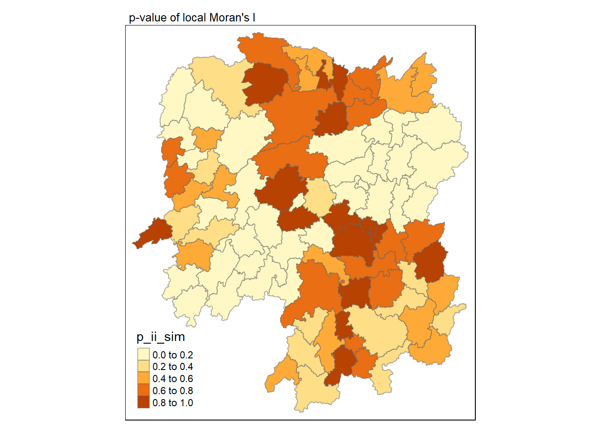
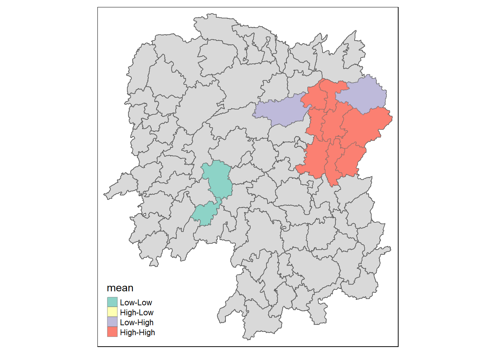
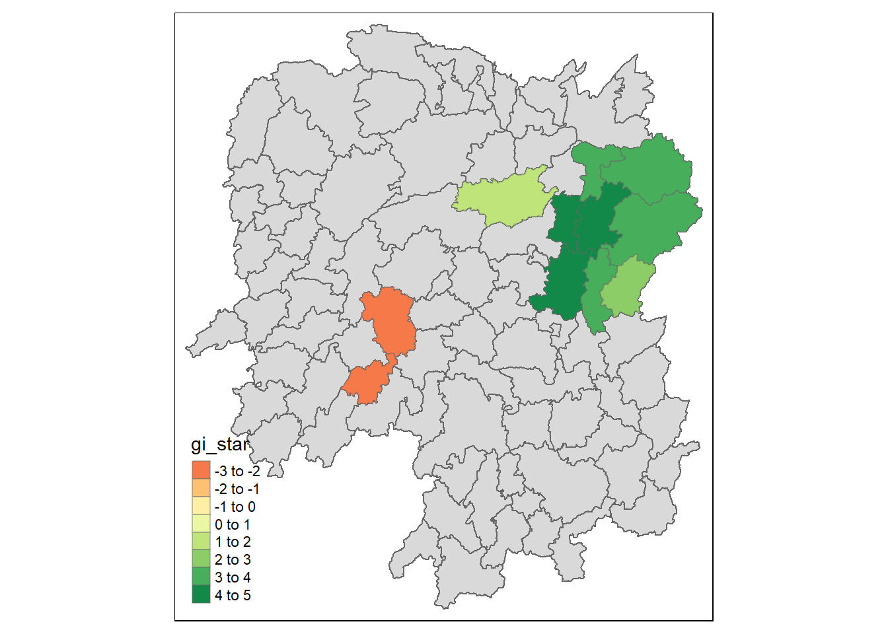
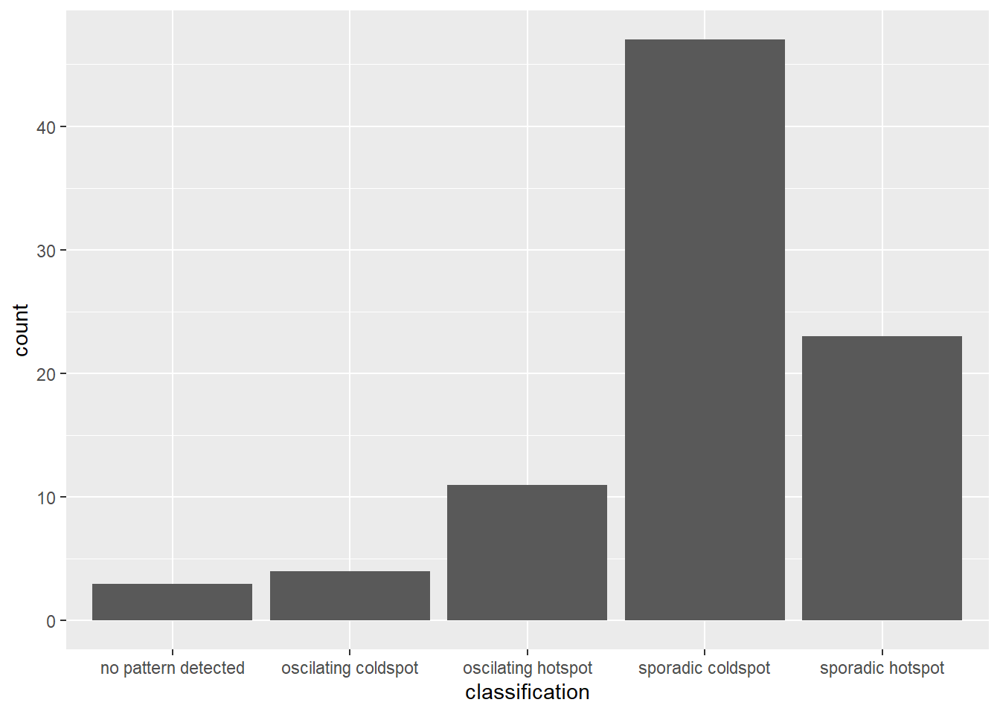
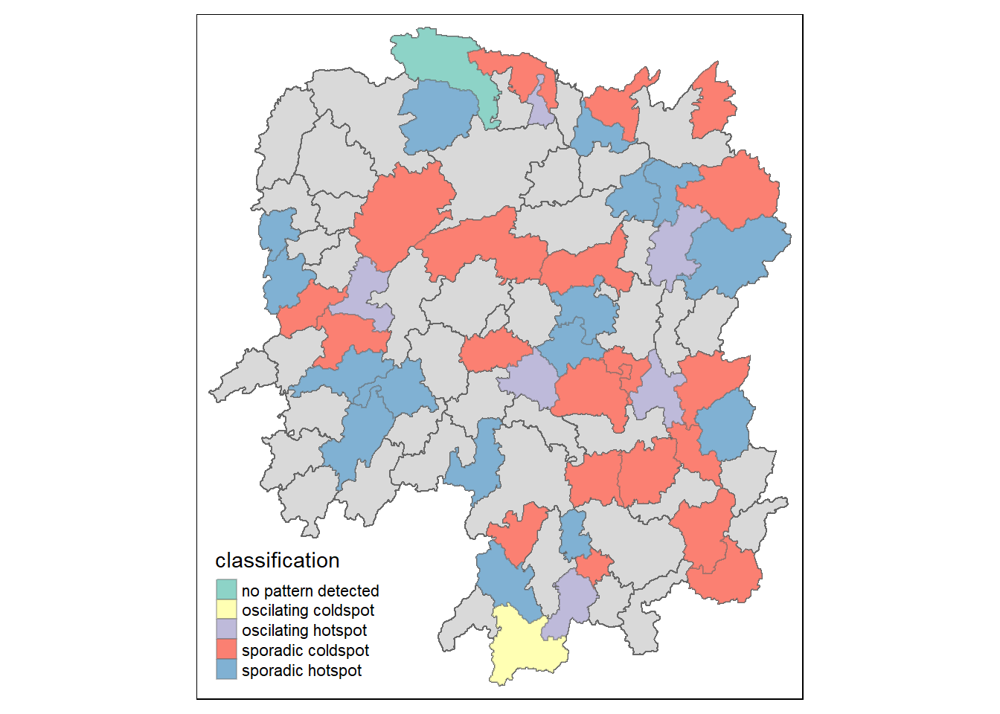

Reveal Code
pacman::p_load(sf, sfdep, plotly, tidyverse, tmap, Kendall)pacman::p_load(sf, sfdep, plotly, tidyverse, tmap, Kendall)hunan <- st_read("Data/Geospatial/Hunan", layer = "Hunan")Reading layer `Hunan' from data source
`C:\Users\yungq\Desktop\SMU Modules\Y4S1\Geospatial Analysis and Applications\IS415 Course Website\In-Class_Exercise\In-Class_Exercise_05\Data\Geospatial\Hunan'
using driver `ESRI Shapefile'
Simple feature collection with 88 features and 7 fields
Geometry type: POLYGON
Dimension: XY
Bounding box: xmin: 108.7831 ymin: 24.6342 xmax: 114.2544 ymax: 30.12812
Geodetic CRS: WGS 84summary(hunan) NAME_2 ID_3 NAME_3 ENGTYPE_3
Length:88 Min. :21098 Length:88 Length:88
Class :character 1st Qu.:21125 Class :character Class :character
Mode :character Median :21150 Mode :character Mode :character
Mean :21150
3rd Qu.:21174
Max. :21201
Shape_Leng Shape_Area County geometry
Min. :0.7722 Min. :0.02128 Length:88 POLYGON :88
1st Qu.:2.2533 1st Qu.:0.13669 Class :character epsg:4326 : 0
Median :2.5844 Median :0.18564 Mode :character +proj=long...: 0
Mean :2.6057 Mean :0.19274
3rd Qu.:3.0994 3rd Qu.:0.23735
Max. :4.5835 Max. :0.53452 hunan2012 <- read_csv("Data/Aspatial/Hunan_2012.csv")
glimpse(hunan2012)Rows: 88
Columns: 29
$ County <chr> "Anhua", "Anren", "Anxiang", "Baojing", "Chaling", "Changn…
$ City <chr> "Yiyang", "Chenzhou", "Changde", "Hunan West", "Zhuzhou", …
$ avg_wage <dbl> 30544, 28058, 31935, 30843, 31251, 28518, 54540, 28597, 33…
$ deposite <dbl> 10967.0, 4598.9, 5517.2, 2250.0, 8241.4, 10860.0, 24332.0,…
$ FAI <dbl> 6831.7, 6386.1, 3541.0, 1005.4, 6508.4, 7920.0, 33624.0, 1…
$ Gov_Rev <dbl> 456.72, 220.57, 243.64, 192.59, 620.19, 769.86, 5350.00, 1…
$ Gov_Exp <dbl> 2703.0, 1454.7, 1779.5, 1379.1, 1947.0, 2631.6, 7885.5, 11…
$ GDP <dbl> 13225.0, 4941.2, 12482.0, 4087.9, 11585.0, 19886.0, 88009.…
$ GDPPC <dbl> 14567, 12761, 23667, 14563, 20078, 24418, 88656, 10132, 17…
$ GIO <dbl> 9276.90, 4189.20, 5108.90, 3623.50, 9157.70, 37392.00, 513…
$ Loan <dbl> 3954.90, 2555.30, 2806.90, 1253.70, 4287.40, 4242.80, 4053…
$ NIPCR <dbl> 3528.3, 3271.8, 7693.7, 4191.3, 3887.7, 9528.0, 17070.0, 3…
$ Bed <dbl> 2718, 970, 1931, 927, 1449, 3605, 3310, 582, 2170, 2179, 1…
$ Emp <dbl> 494.310, 290.820, 336.390, 195.170, 330.290, 548.610, 670.…
$ EmpR <dbl> 441.4, 255.4, 270.5, 145.6, 299.0, 415.1, 452.0, 127.6, 21…
$ EmpRT <dbl> 338.0, 99.4, 205.9, 116.4, 154.0, 273.7, 219.4, 94.4, 174.…
$ Pri_Stu <dbl> 54.175, 33.171, 19.584, 19.249, 33.906, 81.831, 59.151, 18…
$ Sec_Stu <dbl> 32.830, 17.505, 17.819, 11.831, 20.548, 44.485, 39.685, 7.…
$ Household <dbl> 290.4, 104.6, 148.1, 73.2, 148.7, 211.2, 300.3, 76.1, 139.…
$ Household_R <dbl> 234.5, 121.9, 135.4, 69.9, 139.4, 211.7, 248.4, 59.6, 110.…
$ NOIP <dbl> 101, 34, 53, 18, 106, 115, 214, 17, 55, 70, 44, 84, 74, 17…
$ Pop_R <dbl> 670.3, 243.2, 346.0, 184.1, 301.6, 448.2, 475.1, 189.6, 31…
$ RSCG <dbl> 5760.60, 2386.40, 3957.90, 768.04, 4009.50, 5220.40, 22604…
$ Pop_T <dbl> 910.8, 388.7, 528.3, 281.3, 578.4, 816.3, 998.6, 256.7, 45…
$ Agri <dbl> 4942.253, 2357.764, 4524.410, 1118.561, 3793.550, 6430.782…
$ Service <dbl> 5414.5, 3814.1, 14100.0, 541.8, 5444.0, 13074.6, 17726.6, …
$ Disp_Inc <dbl> 12373, 16072, 16610, 13455, 20461, 20868, 183252, 12379, 1…
$ RORP <dbl> 0.7359464, 0.6256753, 0.6549309, 0.6544614, 0.5214385, 0.5…
$ ROREmp <dbl> 0.8929619, 0.8782065, 0.8041262, 0.7460163, 0.9052651, 0.7…hunanGDPPC <- read_csv("Data/Aspatial/Hunan_GDPPC.csv")
glimpse(hunanGDPPC)Rows: 1,496
Columns: 3
$ Year <dbl> 2005, 2005, 2005, 2005, 2005, 2005, 2005, 2005, 2005, 2005, 200…
$ County <chr> "Longshan", "Changsha", "Wangcheng", "Ningxiang", "Liuyang", "Z…
$ GDPPC <dbl> 3469, 24612, 14659, 11687, 13406, 8546, 10944, 8040, 7383, 1168…hunan_GDPPC <- left_join(hunan, hunan2012) %>%
select(1:4, 7, 15)
write_rds(hunan_GDPPC, "Data/Geospatial/RDS/Hunan.rds")hunan_GDPPC <- read_rds("Data/Geospatial/RDS/Hunan.rds")tmap_mode("plot")
tm_shape(hunan_GDPPC) +
tm_fill("GDPPC", style = "quantile", palette = "Blues", title = "GDPPC") +
tm_layout(main.title = "Distribution of GDP per capita by county, Hunan province", main.title.position = "center", main.title.size = 0.8, legend.height = 0.45, legend.width = 0.35, frame = TRUE) +
tm_borders(alpha = 0.5) +
tm_compass(type = "8star", size = 2) +
tm_scale_bar() +
tm_grid(alpha = 0.2)
wm_q <- hunan_GDPPC %>%
mutate(nb = st_contiguity(geometry), wt = st_weights(nb, style = "W"), .before = 1)moranI <- global_moran(wm_q$GDPPC, wm_q$nb, wm_q$wt)
glimpse(moranI)List of 2
$ I: num 0.301
$ K: num 7.64global_moran_test(wm_q$GDPPC, wm_q$nb, wm_q$wt)
Moran I test under randomisation
data: x
weights: listw
Moran I statistic standard deviate = 4.7351, p-value = 1.095e-06
alternative hypothesis: greater
sample estimates:
Moran I statistic Expectation Variance
0.300749970 -0.011494253 0.004348351 global_moran_perm(x = wm_q$GDPPC, nb = wm_q$nb, wt = wm_q$wt, nsim = 999)
Monte-Carlo simulation of Moran I
data: x
weights: listw
number of simulations + 1: 1000
statistic = 0.30075, observed rank = 999, p-value = 0.002
alternative hypothesis: two.sidedlisa <- wm_q %>%
mutate(local_moran = local_moran(GDPPC, nb, wt, nsim = 999), .before = 1) %>%
unnest(local_moran)
glimpse(lisa)Rows: 88
Columns: 21
$ ii <dbl> -1.468468e-03, 2.587817e-02, -1.198765e-02, 1.022468e-03,…
$ eii <dbl> 1.433282e-05, -3.790366e-04, 5.482084e-03, 6.493494e-05, …
$ var_ii <dbl> 5.155540e-04, 1.022994e-02, 1.089858e-01, 5.451345e-06, 1…
$ z_ii <dbl> -0.06530488, 0.25960440, -0.05291774, 0.41011136, 0.40982…
$ p_ii <dbl> 0.9479312534, 0.7951689453, 0.9577974516, 0.6817242595, 0…
$ p_ii_sim <dbl> 0.820, 0.926, 0.876, 0.596, 0.580, 0.788, 0.050, 0.110, 0…
$ p_folded_sim <dbl> 0.410, 0.463, 0.438, 0.298, 0.290, 0.394, 0.025, 0.055, 0…
$ skewness <dbl> -0.8746918, -1.0109108, 0.8344852, 1.0626077, 1.0830373, …
$ kurtosis <dbl> 0.5472523, 1.4929719, 0.6632058, 1.3826526, 1.2643234, 0.…
$ mean <fct> Low-High, Low-Low, High-Low, High-High, High-High, High-L…
$ median <fct> High-High, High-High, High-High, High-High, High-High, Hi…
$ pysal <fct> Low-High, Low-Low, High-Low, High-High, High-High, High-L…
$ nb <nb> <2, 3, 4, 57, 85>, <1, 57, 58, 78, 85>, <1, 4, 5, 85>, <1,…
$ wt <list> <0.2, 0.2, 0.2, 0.2, 0.2>, <0.2, 0.2, 0.2, 0.2, 0.2>, <0…
$ NAME_2 <chr> "Changde", "Changde", "Changde", "Changde", "Changde", "C…
$ ID_3 <int> 21098, 21100, 21101, 21102, 21103, 21104, 21109, 21110, 2…
$ NAME_3 <chr> "Anxiang", "Hanshou", "Jinshi", "Li", "Linli", "Shimen", …
$ ENGTYPE_3 <chr> "County", "County", "County City", "County", "County", "C…
$ County <chr> "Anxiang", "Hanshou", "Jinshi", "Li", "Linli", "Shimen", …
$ GDPPC <dbl> 23667, 20981, 34592, 24473, 25554, 27137, 63118, 62202, 7…
$ geometry <POLYGON [°]> POLYGON ((112.0625 29.75523..., POLYGON ((112.228…tmap_mode("plot")
tm_shape(lisa) +
tm_fill("ii") +
tm_borders(alpha = 0.5) +
tm_view(set.zoom.limits = c(6,8)) +
tm_layout(main.title = "local Moran's I of GDPPC",
main.title.size = 0.8)
tmap_mode("plot")
tm_shape(lisa) +
tm_fill("p_ii_sim") +
tm_borders(alpha = 0.5) +
tm_layout(main.title = "p-value of local Moran's I",
main.title.size = 0.8)
lisa_sig <- lisa %>%
filter(p_ii < 0.05)
tmap_mode("plot")
tm_shape(lisa) +
tm_polygons() +
tm_borders(alpha = 0.5) +
tm_shape(lisa_sig) +
tm_fill("mean") +
tm_borders(alpha = 0.4)
wm_idw <- hunan_GDPPC %>%
mutate(nb = st_contiguity(geometry),
wts = st_inverse_distance(nb, geometry,
scale = 1,
alpha = 1),
.before = 1)
HCSA <- wm_idw %>%
mutate(local_Gi = local_gstar_perm(
GDPPC, nb, wt, nsim = 99),
.before = 1) %>%
unnest(local_Gi)
glimpse(HCSA)Rows: 88
Columns: 17
$ gi_star <dbl> 0.04157939, -0.33349729, 0.28072709, 0.41149401, 0.387293…
$ e_gi <dbl> 0.011187352, 0.010966172, 0.012616498, 0.011049479, 0.011…
$ var_gi <dbl> 5.824384e-06, 7.424333e-06, 7.623252e-06, 8.259654e-06, 8…
$ p_value <dbl> 0.12044798, -0.19088895, -0.14545253, 0.54348412, 0.34317…
$ p_sim <dbl> 0.9041282886, 0.8486125961, 0.8843535957, 0.5867965185, 0…
$ p_folded_sim <dbl> 0.80, 0.98, 0.96, 0.50, 0.58, 0.80, 0.04, 0.08, 0.02, 0.2…
$ skewness <dbl> 0.40, 0.49, 0.48, 0.25, 0.29, 0.40, 0.02, 0.04, 0.01, 0.1…
$ kurtosis <dbl> 1.1100203, 0.7540941, 0.5091735, 1.1628205, 0.9694879, 0.…
$ nb <nb> <2, 3, 4, 57, 85>, <1, 57, 58, 78, 85>, <1, 4, 5, 85>, <1,…
$ wts <list> <0.01526149, 0.03515537, 0.02176677, 0.02836978, 0.01029…
$ NAME_2 <chr> "Changde", "Changde", "Changde", "Changde", "Changde", "C…
$ ID_3 <int> 21098, 21100, 21101, 21102, 21103, 21104, 21109, 21110, 2…
$ NAME_3 <chr> "Anxiang", "Hanshou", "Jinshi", "Li", "Linli", "Shimen", …
$ ENGTYPE_3 <chr> "County", "County", "County City", "County", "County", "C…
$ County <chr> "Anxiang", "Hanshou", "Jinshi", "Li", "Linli", "Shimen", …
$ GDPPC <dbl> 23667, 20981, 34592, 24473, 25554, 27137, 63118, 62202, 7…
$ geometry <POLYGON [°]> POLYGON ((112.0625 29.75523..., POLYGON ((112.228…tmap_mode("plot")
tm_shape(HCSA) +
tm_fill("gi_star") +
tm_borders(alpha = 0.5) +
tm_view(set.zoom.limits = c(6,8))
tmap_mode("plot")
tm_shape(HCSA) +
tm_fill("gi_star") +
tm_borders(alpha = 0.5) +
tm_view(set.zoom.limits = c(6,8))
HCSA_sig <- HCSA %>%
filter(p_sim < 0.05)
tmap_mode("plot")
tm_shape(HCSA) +
tm_polygons() +
tm_borders(alpha = 0.5) +
tm_shape(HCSA_sig) +
tm_fill("gi_star") +
tm_borders(alpha = 0.4)
GDPPC_st <- spacetime(hunanGDPPC, hunan,
.loc_col = "County",
.time_col = "Year")
is_spacetime_cube(GDPPC_st)[1] TRUEGDPPC_nb <- GDPPC_st %>%
activate("geometry") %>%
mutate(nb = include_self(st_contiguity(geometry)),
wt = st_inverse_distance(nb, geometry,
scale = 1,
alpha = 1),
.before = 1) %>%
set_nbs("nb") %>%
set_wts("wt")gi_stars <- GDPPC_nb %>%
group_by(Year) %>%
mutate(gi_star = local_gstar_perm(
GDPPC, nb, wt)) %>%
tidyr::unnest(gi_star)cbg <- gi_stars %>%
ungroup() %>%
filter(County == "Changsha") |>
select(County, Year, gi_star)ggplot(data = cbg,
aes(x = Year,
y = gi_star)) +
geom_line() +
theme_light()
p <- ggplot(data = cbg,
aes(x = Year,
y = gi_star)) +
geom_line() +
theme_light()
ggplotly(p)ehsa <- gi_stars %>%
group_by(County) %>%
summarise(mk = list(unclass(MannKendall(gi_star)))) %>%
unnest_wider(mk)
emerging <- ehsa %>%
arrange(sl, abs(tau)) %>%
slice(1:5)
emerging# A tibble: 5 × 6
County tau sl S D varS
<chr> <dbl> <dbl> <dbl> <dbl> <dbl>
1 Shuangfeng 0.868 0.00000143 118 136. 589.
2 Xiangtan 0.868 0.00000143 118 136. 589.
3 Xiangxiang 0.868 0.00000143 118 136. 589.
4 Chengbu -0.824 0.00000482 -112 136. 589.
5 Dongan -0.824 0.00000482 -112 136. 589.ehsa <- emerging_hotspot_analysis(
x = GDPPC_st,
.var = "GDPPC",
k = 1,
nsim = 99
)ggplot(data = ehsa,
aes(x = classification)) +
geom_bar()
hunan_ehsa <- hunan %>%
left_join(ehsa,
by = join_by(County == location))
ehsa_sig <- hunan_ehsa %>%
filter(p_value < 0.05)
tmap_mode("plot")
tm_shape(hunan_ehsa) +
tm_polygons() +
tm_borders(alpha = 0.5) +
tm_shape(ehsa_sig) +
tm_fill("classification") +
tm_borders(alpha = 0.4)